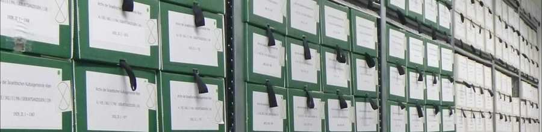

ארכיון
ארכיון הקהילה של Israelitische Kultusgemeinde Vienna (IKG) בן למעלה מ-200 שנה ולכן הוא הארכיון העתיק ביותר של קהילה יהודית ששרד. הארכיון נוסד רשמית בשנת 1816 ועד 1938 הוא התפתח למקום מפגש עם סטנדרטים מדעיים. בתום מלחמת העולם השנייה אוחסנו חומרי הארכיון במרתפים לחים וכל המבנה והסדר הושמדו. להשמדת הארכיון על ידי הנציונלסוציאליסטים יש השפעה גם היום.
בשנת 1998, נשיא IKG Wien דאז, ד"ר אריאל מיוזיקנט, ומנכ"לית הנשיאות, אריקה יעקובוביץ, בחיפוש אחר החלק בארכיון שנותר בווינה. חומר הארכיון ששוחזר בשנת 2000 נצפה, אורגן ונרשם ברשימות זמניים ובמאגרי מידע במספר פרויקטים. יותר מ-70 שנה לאחר פירוקו על ידי הנציונלסוציאליסטים, הוקם הארכיון מחדש כמחלקה נפרדת של IKG Wien בתחילת 2009, ובכך הדגיש את חשיבותו עבור הקהילה הדתית. בתחילת שנת 2014 שולב משרד הרישום במחלקת הארכיון.
הארכיון וחומרי הארכיון שלו מייצגים מורשת תרבותית ייחודית. גודלו הכולל של הארכיון הוא כ-2,588 מטרים ליניאריים או 10.7 מיליון מסמכים. אלו הם מסמכי IKG Wien מהתקופה שלפני 1938, מ-1938 עד 1945 ואחרי 1945 בנושאי הגירה, גירוש, פיצויים, השבה, טיפול בנפגעים, רווחה/רווחה, ניהול מנהלי, בחירות ועניינים משפטיים, ענייני אוכלוסיה, מינהל תרבות, בתי כנסת, בתי כנסת, בתי כנסת, מינהל תרבות, בתי כנסת. סדר יום, ניהול מבנים, עמותות, קרנות, קהילות דתיות ונכסים וכו'.
פעילויות
הארכיון אחראי על שחזור ארכיון הקהילה, אינדקס ודיגיטציה של כל אחזקות הארכיון, מענה לפניות פרטיות ומדעיות מבית ומחוץ וטיפול במשתמשי הארכיון.
משרד הרישום אחראי על ניהול הפנקסים הישנים של ה-IKG Wien בכל הנוגע לשינויים במעמד האזרחי, הנפקת מסמכים למטרות רשמיות ופרטיות ומענה לפניות על פנקסי לידה, נישואין ומוות של IKG Wien (1784 עד 1938).
בקר בארכיון IKG
- מסיבות ארגוניות אנו מבקשים לקבוע תור במייל או להתקשר לביקור בארכיון/בגרויות.
- כל משתמש מחויב למלא ולחתום על טופס משתמש.
- נא להביא איתך תעודה מזהה תקפה עם תמונה.
- את אגרות השימוש בארכיון, עבור התייעצויות, עבור עותקים או תדפיסים יש לשלם באופן מיידי ובמזומן בהתאם ללוח האגרות.
- שימו לב שהגישה לארכיון/משרד הרישום אינה נטולת מחסומים.
- לסיור בארכיון ליחידים או לקבוצות של עד שמונה אנשים יש לפנות להנהלת הארכיון.
- כל משתמש מחויב למלא ולחתום על טופס משתמש.
- נא להביא איתך תעודה מזהה תקפה עם תמונה.
- את אגרות השימוש בארכיון, עבור התייעצויות, עבור עותקים או תדפיסים יש לשלם באופן מיידי ובמזומן בהתאם ללוח האגרות.
- שימו לב שהגישה לארכיון/משרד הרישום אינה נטולת מחסומים.
- לסיור בארכיון ליחידים או לקבוצות של עד שישה אנשים יש לפנות להנהלת הארכיון.
פניות לארכיון
- פניות לארכיון ו/או לפנקסים ייענו, בהתאם למקרה, באמצעות חומרי הארכיון וספרי המרשם בהתאם להוראות הדין.
- לפניות בכתב, שלח את טופס המשתמש המלא כסריקה בדוא"ל לעובדים הרשומים תחת צור קשר.
- מידע לא יימסר בטלפון.
- שימו לב כי לפניות הקשורות למשפחה ניתן לענות רק במסגרת האפשרויות הקיימות. כרגע אין באפשרותנו לערוך מחקר גנאלוגי או ליצור עצי משפחה.
- פניות עם מידע חלקי או פניות החורגות מתחום המחקר או מכוסות בספרות קיימת לא יטופלו.
- את האגרות עבור שימוש בארכיון, מחקר, העברת מסמכים וכדומה יש לשלם מראש או מיד עם קבלת החשבונית בהתאם ללוח האגרות וכפי שיקבע צוות הארכיון.
- לקבלת הרשאה לפרסום חומר ארכיון IKG Wien בתערוכות, פרסומים, עיתונים, מדיה מקוונת או זמינה אחרת, נא לפנות להנהלת הארכיון.
מחקר ומחקר בארכיון IKG/בגרויות
ניתן להעמיד את אחזקות הארכיון או ספרי המצב האזרחי הבאים למחקר ומחקר בחדר המשתמש. לפני השימוש מתקיים הדרכה קצרה כיצד לטפל במסד הנתונים או בתיקיות וברשימות. על הבדיקה חלות הוראות הדין של מעמד אזרחי, הגנת מידע ותקנות הארכיון בנוסח התקף כיום.
אחזקות בארכיון:
- הודעות לידה (1893 - 1937)
- הודעות מוות (1920 - 1944)
- פרוטוקולי הלוויה (1919 - 1961 ו-1965 - 1972)
- תיק אישי להגירה (מאי 1938 -1940) *
- שאלוני הגירה ממרכז הרווחה IKG Wien (מאי 1938 - 1940) *
- קובץ כרטיס "D" בחשבון, קובץ כרטיס הנוגע למטבע הזר לבריחה (מאי 1938 -1940) *
- מסמכים על הגירת ילדים (מאי 1938 -1940) *
- מסמכים למרכז הייעוץ הרפואי (מאי 1938 -1940) *
- תיקים על השואה, כולל רשימות גירוש (1939 ו-1941 - 1944) *
- קובץ הנוגע לשאילתות חיפוש של ועדת ההפצה האמריקאית (אחרי 1945) *
- רשימת היהודים המתגוררים בווינה מ-15 בספטמבר 1939 *
- המרשם היהודי של בורגנלנד (לפני 1938)
- קבצי מאפיינים של IKG Wien (לפני 1938 עד אחרי 1945)
- אגודות יהודיות, קרנות וקהילות דתיות (כולל עותקים חלקיים מארכיונים אחרים)
- קובץ עובדי IKG Wien (1925 עד 1945)
- תיקים בקשר לתביעות לפי חוק רווחת הנפגעים וחוק נזקי רכוש במלחמה ורדיפה (גישה רק בהסכמת המשפחה הנוגעת בדבר)
* חומרי ארכיון ומסמכים הקשורים לשואה, אנטישמיות וגזענות מושאלים במכון ויזנטל לחקר השואה (VWI) בווינה מאז פברואר 2018.
ספרי סטטוס אזרחי/בגרויות:
- פנקסי לידה, פנקסי נישואין ופנקסי פטירה של IKG Wien, 1784/1785 - 1938·
- פנקסי לידה, פנקסי נישואין ופנקסי פטירה של קהילת ישראל הטורקית, 1846/1859 - 1938
- פנקסי לידה, פנקסי נישואין ופנקסי פטירה של הרב הצבאי היהודי האוסטרוהונגרי בווינה, 1914/1915 - 1918/1920
- רשימות צבאיות של IKG Wien (רשימות לידה של בנים), 1863 - 1896
- פנקסי לידה, פנקסי נישואין ופנקסי פטירה של הקהילות הדתיות הבאות: IKG באדן, IKG Eisenstadt, IKG Großenzersdorf, IKG Horn, IKG Klosterneuburg, IKG Lackenbach, IKG Mattersburg, IKG9 Mödling, IKG 9 Mödling. Stockerau-Korneuburg, IKG St. Pölten, Ybbs-Amstetten (לא השתמר לחלוטין)
דיידר-פרידמן-פלאץ 1
1010 Wien
אוסטריה
כתובת הדואר היא:
IKG Wien, ארכיון/מטריקה
Seitenstettengasse 4
1010 Wien
אוסטריה
צור קשר עם הנהלת הארכיון
מג.ª Susanne Uslu-Pauer
דוא"ל: archiv [at] ikg-wien.at
טל': +43/1/53104-210
פקס: +43/1/53104-219
צור קשר עם הנהלת הבגרות
DSA אירמה וולז, BA
דוא"ל: matriken [at] ikg-wien.at
טל': +43/1/53104-172
פקס: +43/1/53104-219
שעות פתיחה
שני - ה': 10:00 - 16:00, ו': 10:00 - 13:00
דרוש תור
חריגים: חגים דתיים וחגים
הגישה לארכיון ולפנקסים אינה נטולת מחסומים.